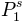
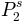

The set of python libraries Aqua allows us to analyse 1-D trajectories as it has been propossed by G. Berezovska et al. in J. Chem. Phys. 137, 194101 (2012). This method unveils the conformational macrostates kinetically “well defined” (see Accurate kinetic decomposition) and the underlying accurate first order kinetic model.
The following tutorial shows how this analysis can be easily done with Aqua.
The indications to download and install these libraries can be found in Getting Started.
Some basic notions on python will be assumed along this tutorial. To load this libraries the path to Aqua must be either...
import sys
sys.path.append('/path/to/Aqua')
Once this has been done, Aqua must be imported. As you probably know, Python can be run from a script or from an ipython session. This tutorial as been written as an ipython history of commands. So lets begin with the proper command to load Aqua:
In [1]: from aqua import *
Given a file with a 1D trajectory in its second column, traj.oup, the class kinetic_1D_analysis can be initialized:
In [2]: test=kinetic_analysis('traj.oup',columns=1)
# 999901 frames, 1 particles, 1 dimensions.
Now, the trajectory is stored in the object test:
In [3]: print test.traj[:,0,0]
array([-0.91936072, 0.74886578, -1.07525923, ..., -9.09667346, -8.40884264, -8.83918787])
Notice that the test.traj is a numpy array of dimensions: [test.frames,test.particles,test.dimensions]. This way we can take advantage of its intrinsic numpy attributes and functions:
In [6]: print 'Min.:', test.traj.min(),' Mean:', test.traj.mean() ,' Max.:', test.traj.max()
Min.: -11.4344662381 Mean: -3.40808122446 Max.: 2.78106514618
Our object test has the attributes and methods of a kinetic_analysis class. For instance, the histogram can be built as:
In [7]: hx,hy=test.histogram(delta=0.20,segment=[-12.0,4.0],norm=False)
And plotted with pylab as:
In [8]: import pylab
In [9]: pylab.plot(hx,hy,'b-')
In [11]: pylab.show()

After loading the trajectory, the method is applied choosing at least three parameters:
In [3]: test.berezovska2012(window=10,granularity=1.2,bins=15,verbose=True)
# Network:
# 97 nodes
# 1057 links out
# 999880.0 total weight nodes
# Number of clusters: 3
The algorithm decomposes this trajectory into 3 macro-states or clusters. This way, we can find a clusters trajectory according to this decomposition.
In [4]: print test.traj_clusters[:,0,0]
[0 0 0 ..., 1 1 1]
Notice that the method dismisses the first and last segments of length ‘window=10’ time steps. Thereby, test.traj_clusters[0] corresponds to test.traj[10].
In [5]: print len(test.traj), len(test.traj_clusters)
999901 999881
We can now have a look to the histograms of these 3 macro-states.
In [6]: hx_c0,hy_c0 = test.histogram(cluster=0,delta=0.20,segment=[-12.0,4.0],norm=False)
In [7]: hx_c1,hy_c1 = test.histogram(cluster=1,delta=0.20,segment=[-12.0,4.0],norm=False)
In [8]: hx_c2,hy_c2 = test.histogram(cluster=2,delta=0.20,segment=[-12.0,4.0],norm=False)
A first order kinetic model can be computed with these three macro-states. The model should be written as a master equation where the transition probabilities, or rates, between macro-states interplay to mimic the macroscopical dynamical behavior observed in the 1D trajectory.


In Aqua this model is enconded as a kinetic or conformational network. The trajectory is mapped into a graph where weighted nodes and directed links accounts for the occupation of clusters and the number of transitions among them.
In [9]: test.kinetic_network(traj='clusters',verbose=True)
# Network:
# 3 nodes
# 7 links out
# 999880.0 total weight nodes
Before getting the transision probabilities, or rates, detailed
balance condition,  , is
impossed symmetrising the network.
, is
impossed symmetrising the network.
In [10]: test.network_clusters.symmetrize(new=False,verbose=False)
The flux, number of transitions along the trajectory, is stored as the weight of a given link. This way, the flux from cluster 0 to cluster 1:
In [28]: test.network_clusters.node[0].link[1]
264.5
Notice that the number is not an integer due to the symmetrization of the network.
Now, the transition probabilities can be computed normalizing the flux:
In [11]: for ii in range(3):
....: ww=test.network_clusters.node[ii].weight
....: for jj,kk in test.network_clusters.node[ii].link.iteritems():
....: if ii!=jj :
....: print 'P'+str(jj)+str(ii)+'=', kk/ww
....:
P10= 0.000494643543406
P20= 7.29342086685e-05
P01= 0.000937845154496
P02= 0.00021297277225
Since detailed balance condition is fulfilled by construction, the stationary solution of the model is given by the occupation probabilities (, , ):
In [12]: ww=test.network_clusters.weight
In [13]: for ii in range(3):
....: print 'P'+str(ii)+'^s =', test.network_clusters.node[ii].weight/ww
....:
P0^s = 0.534792675121
P1^s = 0.282063347602
P2^s = 0.183143977277
Once the analysis has been applied, some kinetic observables can be computed (see:). Here we illustrate how they can be computed straight forward from the 1-D trajectory to be compared with the kinetic model.
The Global First Passage Time distribution to a certain cluster, and the First Passage Time distribution from any cluster to it can be extracted from the trajectory:
In [14]: fpt_0_x,fpt_0_y = test.first_passage_time(traj='clusters',to_state=0,norm=False,verbose=True)
# Mean first passage time: 2344.27167283 frames.
In [15]: fpt_10_x,fpt_10_y = test.first_passage_time(traj='clusters',from_state=1,to_state=0,norm=False,verbose=True)
# Mean first passage time: 1092.77053998 frames.
In [16]: fpt_20_x,fpt_20_y = test.first_passage_time(traj='clusters',from_state=2,to_state=0,norm=False,verbose=True)
# Mean first passage time: 4258.04559256 frames.
The trajectory of this tutorial is not long enough to have good statistics. But we can compare these distributions with with those given by the kinetic model. To do this, the trajectory of a brownian walker following the transition probabilities of the model is obtained:
In [17]: bw_traj=test.network_clusters.brownian_walker(origin=0,length=999880)
Now as we did with the original trajectory:
In [18]: bw=kinetic_analysis(bw_traj)
# 999881 frames, 1 particles, 1 dimensions.
In [19]: fpt_0_x,fpt_0_y = bw.first_passage_time(to_state=0,norm=False,verbose=True)
# Mean first passage time: 2310.47971147 frames.
In [20]: fpt_10_x,fpt_10_y = bw.first_passage_time(from_state=1,to_state=0,norm=False,verbose=True)
# Mean first passage time: 1028.52939656 frames.
In [21]: fpt_20_x,fpt_20_y = bw.first_passage_time(from_state=2,to_state=0,norm=False,verbose=True)
# Mean first passage time: 4692.91090041 frames.
Warning
Please cite the following reference if the method is used for a scientific publication: G. Berezovska, D. Prada-Gracia, S. Mostarda and F. Rao. J. Chem. Phys. 137, 194101 (2012).
See also
Tutorial Kinetic Analysis for further details on attributes and methods related with this analysis.
Note
The figures were obtained with a trajectory x10 larger for a better statistics.
{kind=link}
{kind=link}
{kind=link}